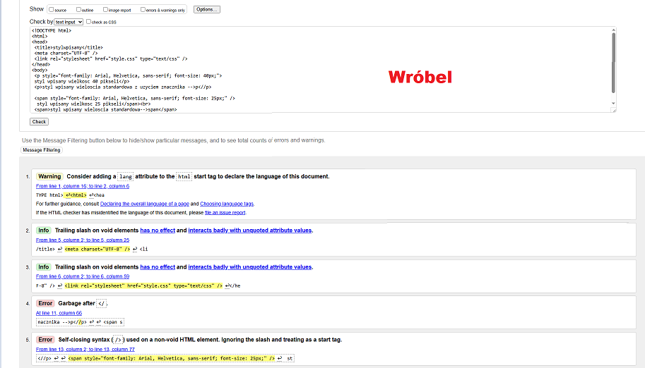
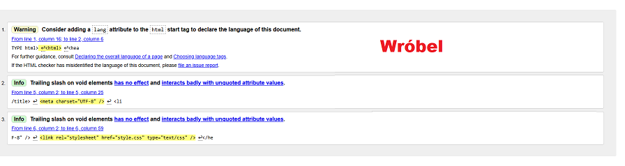

- Co to jest walidacja.
Program sprawdzający poprawność dokumentu o określonej składni.
- Podaj rodzaje walidacji
- walidator kodu HTML,
- walidator kodu CSS,
- Co umie wskazać walidator (dwie informacje)
Walidatory potrafią, wskazać miejsce błędu oraz podać przyczynę
błędu (mogą podawać numer błędu).
Z błędami:

Bez błędów:
